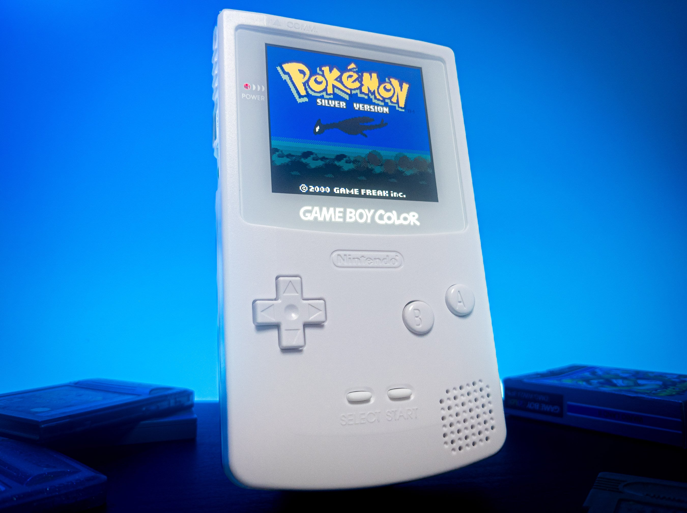
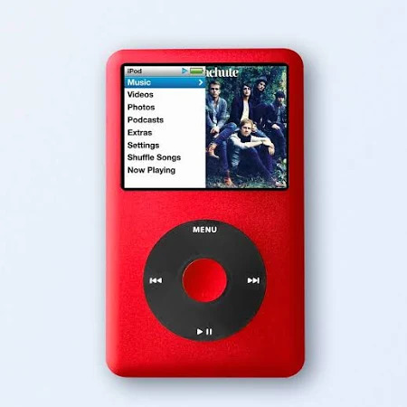
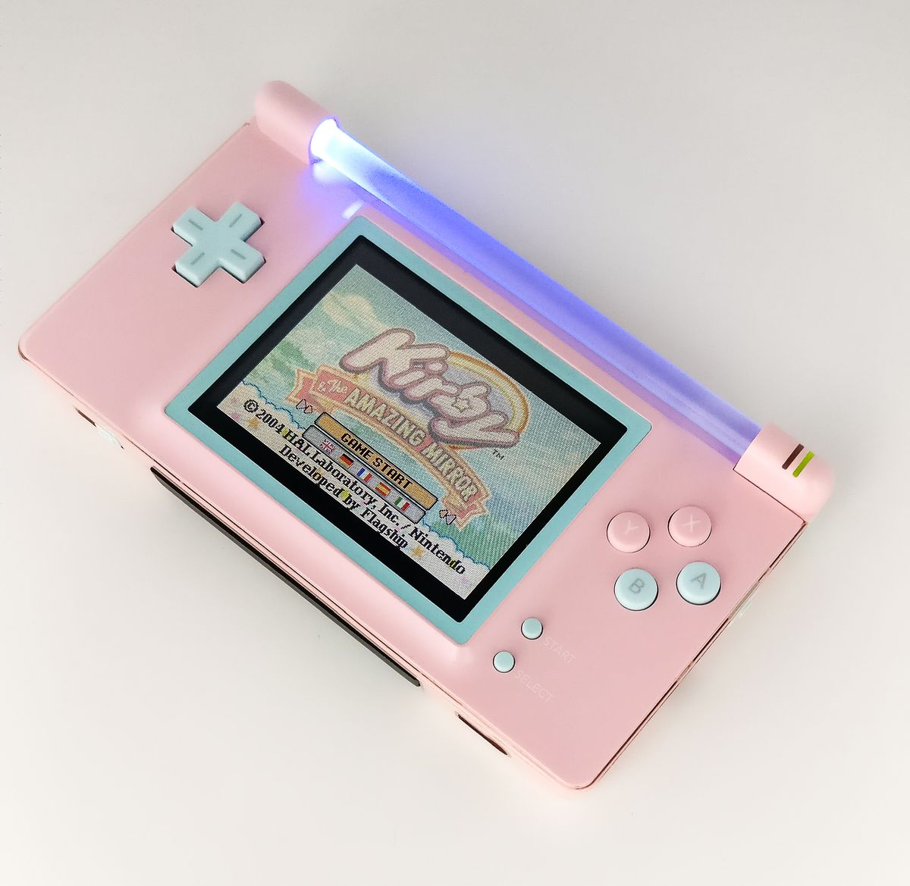

Projects
New GBC screen
Gameboy color screens have always had the issue of a hard to see screen without proper lighting. While screen mods have existed before, they can sometimes be a hassle for newcomers to change. Well not anymore, as this new ips screen can be swapped out very easily with no soldering required. Just dissasemble the gameboy and replace the screen like normal and its done. To get the new screen, click HERE.
Ipod classic shell swap guide
Want to revamp your old ipod into bright new colors that fir your style? Well you're in luck because there are a wide range of ipod classic shells for you to pick from, no matter what generation it is. And its very simple as well as long as you carfully follow the instructions. To see the guide, click HERE.
Repurpose broken ds lites
Sometimes ds lites can break off from their hinges from accidents. The good news is that its not all bad. You can always use the bottom half of the screen and turn it into a better gameboy advance. You get the hardware advantages of the ds while still playing a great selection of gameboy advance games. Learn how to mod your ds lite HERE.